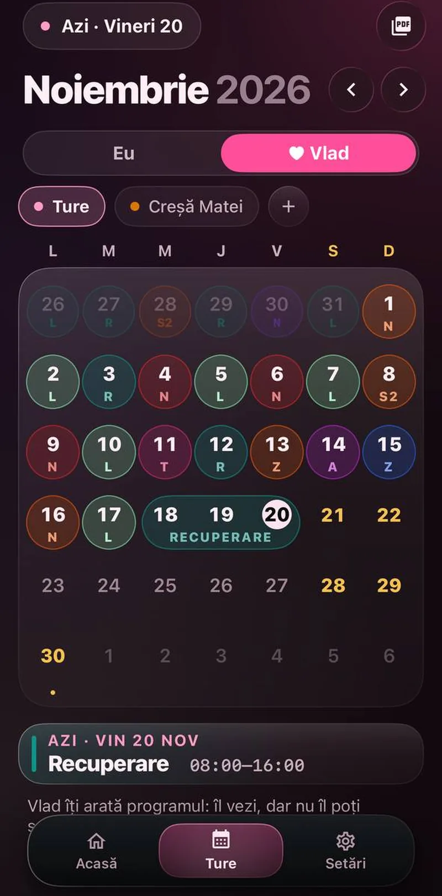
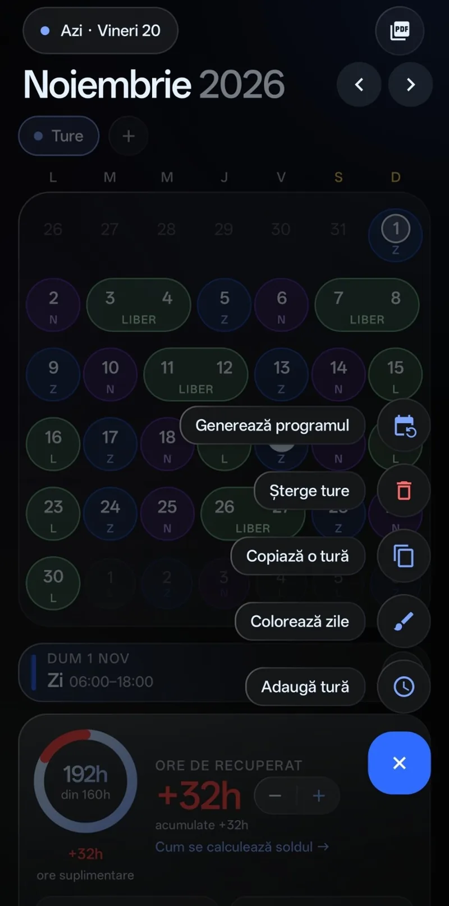
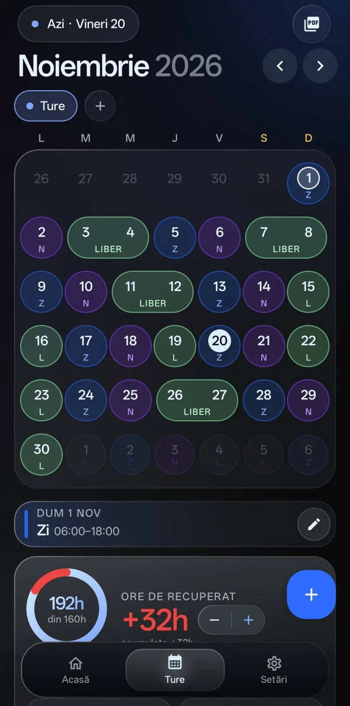
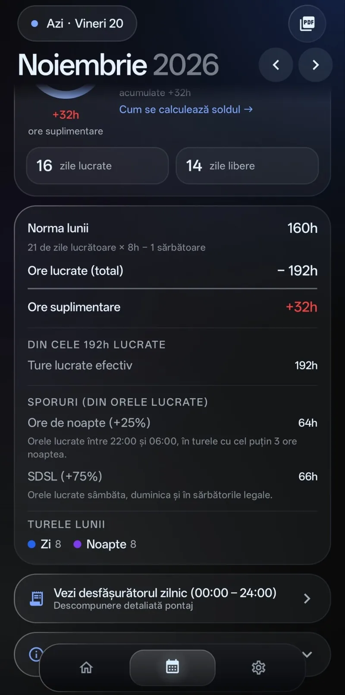
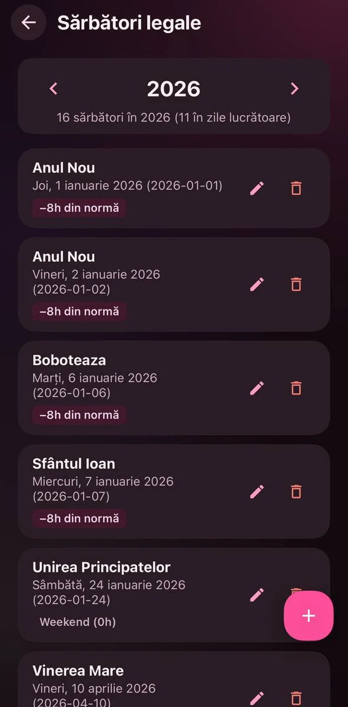
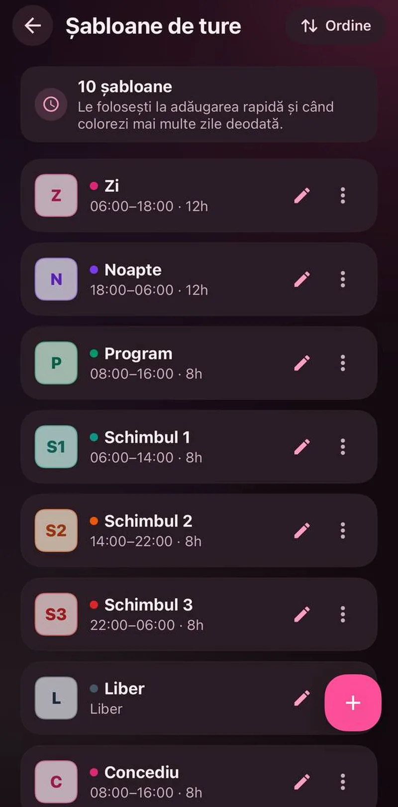
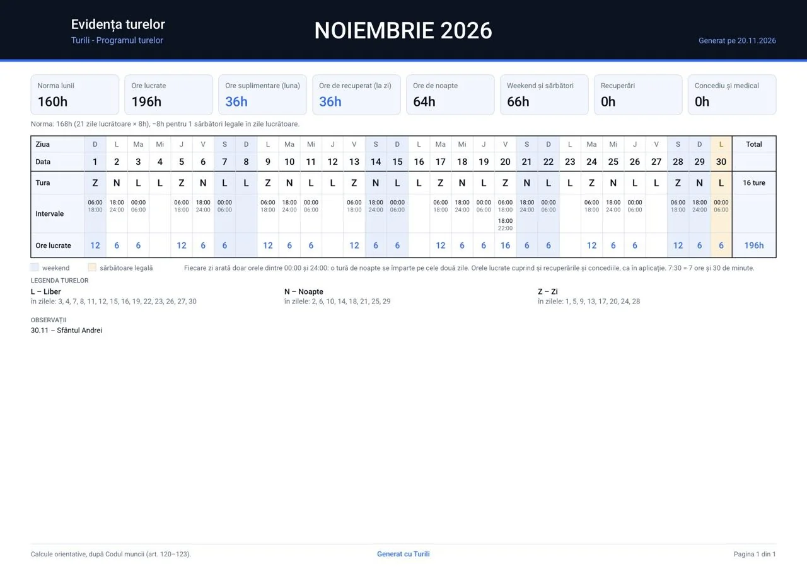

Programul stă pe telefon
Calendarul, orele, PDF-ul și statisticile merg fără cont. Nimeni nu îți vede turele.
Program de ture · făcut pentru România
Tot anul generat din câteva atingeri. Norma, orele suplimentare și cele de noapte, calculate după Codul muncii, cu sărbătorile legale din România.
Făcută de un coleg, pentru colegi.

Programul în doi
Dacă vreți amândoi, vă vedeți turele unul altuia în același calendar. Știi dintr-o privire când sunteți liberi împreună.
Ce face
Alegi tiparul și data primei ture, iar Turili pune turele până la sfârșitul anului. Gata cu completatul zi de zi.

Zi, noapte, liber, concediu, recuperare: fiecare cu culoarea și litera ei. Iar dedesubt, orele lunii față de normă, la zi.

Norma lunii, orele lucrate, cele suplimentare, orele de noapte (+25%), weekendurile, sărbătorile și recuperările. Toate calculate, fără pix și hârtie.

Toate sărbătorile legale din România, an de an, scad singure din normă. Nu mai numeri pe degete câte ore are luna.

Șabloane cu nume, culoare și ore: zi, noapte, schimburi, program. Și o notificare înainte de fiecare tură, ca să nu te prindă din urmă.

Raport PDF
Lunar sau anual, cu toate totalurile, gata de printat sau de dat mai departe. Sau ca poză, pe WhatsApp.

Alegi culoarea care-ți place. Se schimbă toată aplicația, de la ecranul principal până la calendar.
Calendarul, orele, PDF-ul și statisticile merg fără cont. Nimeni nu îți vede turele.
Turili nu are reclame și nu folosește servicii de urmărire sau de analitică.
Contul Google e nevoie doar pentru programul în doi și pentru Turili Expert.
Turili e programul de ture din JAC, acum și ca aplicație separată. Din JAC poți dărui invitații Turili Expert colegilor sau partenerului.
Funcțiile de bază sunt gratuite, iar în aplicație nu se poate cumpăra nimic deocamdată. Turili Expert se deblochează gratuit, cu un cod de invitație.
Nu. Contul Google e nevoie doar dacă vrei programul în doi cu partenerul sau Turili Expert.
Nu, dacă faci o copie de rezervă din aplicație și o restaurezi pe telefonul nou. Backup-ul automat Android, dacă e activ, le poate păstra și el.
Urmează Codul muncii și sărbătorile legale, dar sunt orientative. Pentru plată contează evidența de la locul de muncă.
Programul tău stă pe telefon. Detaliile sunt în politica de confidențialitate.